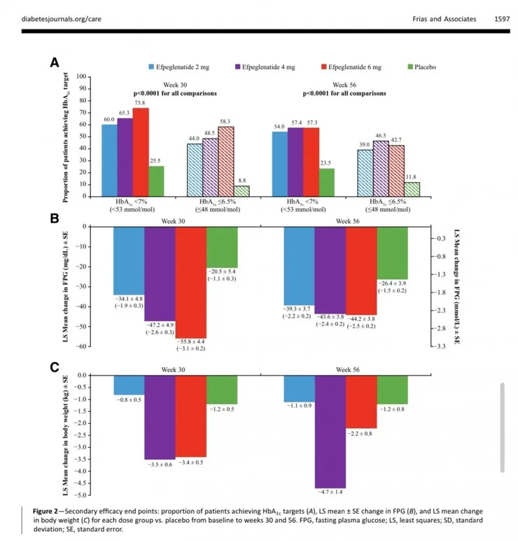
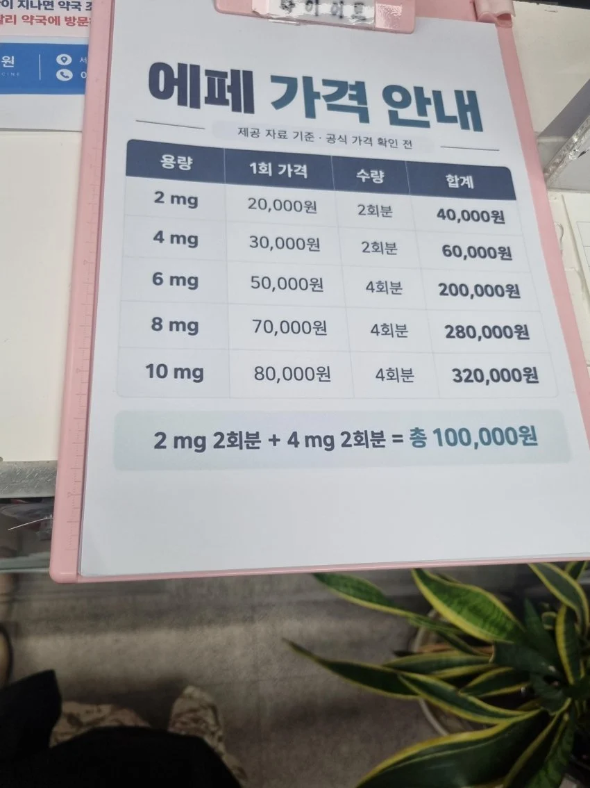

에페글레나타이드
2mg
30주차 -0.8kg
56주차 -1.1kg
4mg
30주차 -3.5kg
56주차 -4.7kg
6mg
30주차 -3.4kg
56주차 -2.2kg
위약
30주차 -1.2kg
56주차 -1.2kg
맹물보다 못한 결과

2만원 허공에 버리기

에페글레나타이드
2mg
30주차 -0.8kg
56주차 -1.1kg
4mg
30주차 -3.5kg
56주차 -4.7kg
6mg
30주차 -3.4kg
56주차 -2.2kg
위약
30주차 -1.2kg
56주차 -1.2kg
맹물보다 못한 결과

2만원 허공에 버리기
그건 한미 결정이지 내 논지랑은 관계 없는 얘기인듯?
정상인들 대상으로는 다를 수 있는데, 당뇨병환자들 연구결과 가지고 체중감소폭이 위약과 다를 바 없다고 하는건 맞는 비판이 아니며, 애초에 glp-1계열은 다이어트약이 아닌, 대사 정상화 시키는 당뇨약이라는 소리
위고비나 마운자로는 애초에 지금 다이어트약으로 팔고있고 당뇨약이면 당뇨병환자에게만 팔아야지 약국에서 저렇게 광고하는거는 아니라고 생각함. 광고를 안했으면 당뇨약인거 인정 이럴텐데 저럴거면 누가봐도 다이어트약으로 파는거라고 볼수밖에 없음.
ㅇ 그렇게 생각할 수 있는데 댓글들처럼 무지성 비판의 근거로는 적절치 않다고 ㅋㅋㅋ
왜자꾸 논지를 틀어버리냐
내말은 논지를 틀어버리는게 다이어트약이 아니라고 주장하는 쪽이라고 생각함. 약국에서 다이어트약으로 팔고있으니 효과를 가지고 따지는거지 애초에 체중감소효과를 발표하지 말던가 눈가리고 아옹도 아니고 저러고서 당뇨약이에요 이러면 사람들이 아 그렇군요 하는게 더 이상하지.
약국에서 저렇게 팔지도 않고 있는데 사람들이 굳이 당뇨약을 찾아서 체중감소 효과를 따질리 없잖아.
그리고 제조사에서도 굳이 체중감소효과가 핵심이 아닌데 밝힐 필요가 있나 싶기도하고.
다이어트 약이라고 쳐도 마운자로 위고비는 세마글루티드고 에페는 에페글레나타이드로 분자구조부터 다른 친구들인데 마운자로대비 체중감량효과가 적다고 욕먹는게 맞음?
다른 약이니까 당연히 효과를 보는 용량이 다를 수 있는건데?
지금 그말이 아니라 왜 다이어트효과를 광고하냐는거임.
음... 중간에 끼어들자면,
네 말대로 사람들의 관심은 (정상인에 대한) 비만치료효과에 있는데, 당뇨환자 대상 실험 결과만 가져와서 비판한 본문이 더 논지를 호도한 것 같아. 우리 집안이 당뇨 집안이라 많이 보는데, 당뇨가 진행되면 저절로 살이 빠지거든. 저 차트만 보면 위약에 비해 '당화혈색소 수치를 정상으로 되돌리면서' 체중도 얼마간 감소시킨다는 거거든. 네 논지에 맞게 에페를 까려면 다른 실험 결과가 필요할 것 같아
이말맞. 차라리 일반인 대상 연구결과 갖고와서 체중감량 비교하면서 가성비 따지면 모를까
아니 애초에 다이어트약으로 광고를 하지 않았으면 비교도 안된다는거지.
지금 본문 사진보면 다이어트약으로 광고하는거니 당뇨약을 굳이 저렇게 가격표 써놓을일이 없잖아.
아니지. 내 말은 본문 사진 만으로는 건강한 사람들에게 얼마나 효과가 있는지 판단이 안된다는 거야. 한미약품이 본문에 있는 연구만으로 임상실험을 통과했는데 다이어트 약으로 홍보하고 있다면 네 말이 맞지만, 그랬으면 당뇨 환자들에게만 처방하는 허가만 나왔을 걸? 당뇨 없는 비만인에게도 임상실험을 한 연구가 있으니까 비만약으로 허가가 나온 거겠지. 그 실험 결과를 봐야 판단해볼 수 있다는 거야.
설명 ㄱㅅㄱㅅ. 당뇨 환자 대상이면, 혈당 관리가 안되면서 살이 빠지는 경우가 있으니, 2mg 에서 체중 감소 효과가 플라시보 보다 못한 것도 이해가 가네. 그리고 6mg 효과보다 4mg 효과가 왜 더 높지? 했던 거에 대한 힌트도 되는 것 같고.
ㅇ 대상 환자군부터 운동과 식이요법으로 혈당조절이 안되는 환자들임.
하긴 운동과 식이조절로 관리가 되면 당뇨약을 먹을 필요가 없지
와 댓글쓰면 고소당할거 같다
너 고소 ㅅㄱ
=========
이상 고소 명단
저거 맞느니 지금 당장 부엌에가서 수돗물을 마시는게 낫단거임? ㄷㄷ
수돗물 잘못마셔 배탈나거나 체하는게 더 나은듯
식염순가
FDA인증도 없이 패스트트랙으로 출시
한국이 특화 ㅇㅈㄹ할때부터 이새끼들은 답없음
당뇨병 특화면 당뇨병만 쓰던가 어떻게든 위고비
마운자로 시장 좀 처먹으려고 여론과 식약처 로비중ㅋㅋ
어허! 원래 유구한 전통이거늘!
저정도면 그냥 식단운동하며 빼는거가 더 효과 좋겠는데? 아니 애초에 임상실험도 약효로 빠진게 아니라 운동해서 빠진걸 약효라고 착각한거 아님?
걍 상가헬스장 끊는게 더 나은데요?
다 떠나서 한미약품인게 좀 의외네...
얘네는 우리나라 제약회사중 거의 정도를 걷는 회사아닌가
한순간에 커뮤에서 hlb.네이쳐셀 이런급 되버렸냐;
애초에 한국 제약회사중에 신약을 개발할 역량이 되는 회사가 있기는 한가..?
1년 동안 5키로 이하로 뺀거면 그냥 노화와서 근육 빠진거 아니냐?
이거 봐줄려고 ㅋㅋ 마운자로 통제중인거냐?
위고비나 마운자로는 췌장에 문제생겨서 일난다는데
에페는 그런 문제가 없다면 맞아볼 의향은 있긴해
애초에 효과가 ㅈ도 없으니
ㅈ도없더라도 작동하는데 췌장에 문제생기냐의 차이니까
병신인가 이건
이거 보고 위약 처방 받으러 간다
밥 굶기고 방구석에 처박아두고 10만원치 삼겹살만 처먹여도 1주일에 5kg은 빠지겠다
오 저탄고지!
그럼 당뇨병 치료제라고 해야지 왜 다이어트약인것처럼 팔어?